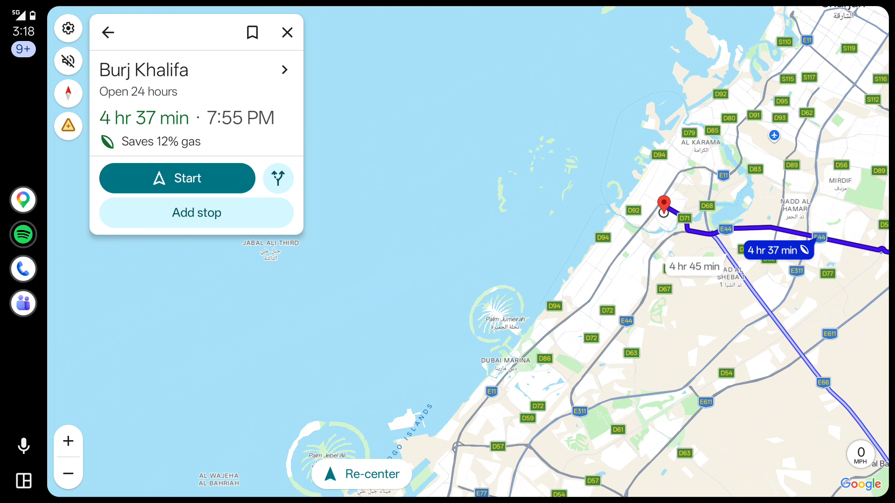

أندرويد أوتو.
على شاشة سيارتك BYD.
خرائطك وموسيقاك ومحادثاتك على شاشة السيارة. يوفّر DiAuto أندرويد أوتو لاسلكياً لوحدات BYD DiLink المتوافقة، بواجهة أبسط وتمرير أكثر سلاسة.
لا تطبيق إضافي على الهاتف. لا قطعة خارجية أو أجهزة إضافية. لا روت.
ثبّت DiAuto على شاشة السيارة. يستخدم هاتف أندرويد المتوافق دعم Android Auto المدمج فيه. ما زلت تحتاج إلى هاتف أندرويد؛ هذا التطبيق ليس Apple CarPlay.
مصمّم للسيارة
{kind=link}



التثبيت على شاشة السيارة
- نزّل ملف APK وثبّته على شاشة السيارة بالطريقة التي يسمح بها نظامها، أو اتّبع دليل ADB أدناه. نفّذ الإعداد والسيارة متوقفة.
- افتح DiAuto وأكمل الإعداد. امنح أذونات البلوتوث والواي فاي/الموقع والميكروفون وغيرها بحسب الميزات المستخدمة.
- اقرن هاتف أندرويد من إعدادات بلوتوث السيارة. أبقِ البلوتوث والواي فاي مفعّلين، ثم اختر Connect phone في DiAuto.
- تفضّل السلك؟ وصّل هاتفك بكابل USB يدعم نقل البيانات واختر Connect with USB.
تخفي بعض إصدارات DiLink عنوان Wi-Fi Direct. إذا تعذّر الاقتران اللاسلكي، اتّبع خطوات Static BSSID في دليل التثبيت.
دليل التثبيت عبر ADB والمساعدة في الاقتران ↗الجديد في هذا الإصدار
- أندرويد أوتو لاسلكي مع دعم الاتصال السلكي عبر USB.
- واجهة رئيسية وإعدادات ومفاتيح ونوافذ مناسبة للسيارة.
- وضع تشغيل الموسيقى عبر بلوتوث السيارة لتجنّب تعارض التحكم بالصوت.
- اختيار أذكى لقناة الواي فاي وتنظيم عرض الإطارات لتقليل تقطّع التمرير.
التوافق
تم الاختبار على BYD DiLink 5.1 بنظام Android 13، لاسلكياً وبكابل USB فعلي. لم يُتحقق بعد من بقية الشاشات وإصدارات النظام. تعتمد الميزات والأداء على الهاتف والسيارة؛ لا نَعِد بثبات 60 إطاراً في الثانية.
تابع آخر التحديثات
تابع قناة تيليجرام للحصول على الإصدارات الجديدة وأخبار المشروع.
التحديثات والتوقيع
هذا أول إصدار عام بمفتاح توقيع مخصص، وستستخدمه التحديثات العامة القادمة. قد تختلف توقيعات النسخ التجريبية الخاصة ونسخ المشروع الأصلي: صدّر إعداداتك قبل حذف أي نسخة متعارضة. الحذف يزيل بيانات التطبيق المحلية.